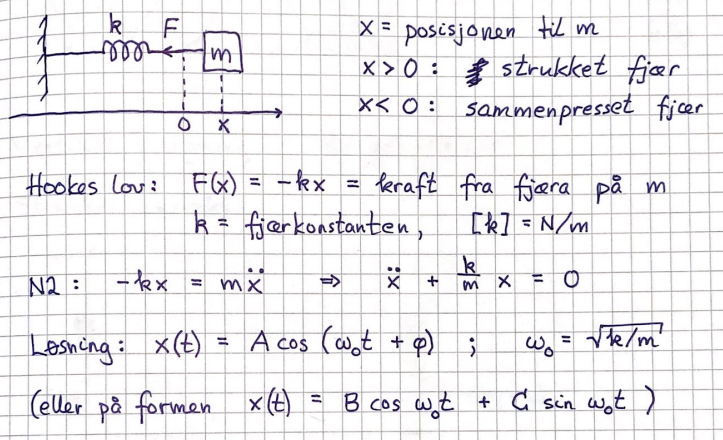

TFY4125 - Physics
Links
Temaer
Hentet fra framdriftsplanen og forklart ved hjelp av forelesningsnotatene.
Klassisk dynamikk
Størrelser og enheter SI-systemet Kinematikk Sirkelbevegelse
Krumlinjet bevegelse
 Newtons lover
Fundamentale krefter i naturen
Tyngde
Kontaktkrefter
Normalkraft. Snordrag
Friksjon
Newtons lover, strategi og eksempler
Friksjon i fluider
Newtons lover
Fundamentale krefter i naturen
Tyngde
Kontaktkrefter
Normalkraft. Snordrag
Friksjon
Newtons lover, strategi og eksempler
Friksjon i fluider
Arbeid og energi Arbeid Effekt Kinetisk energi Konservativ kraft Potensiell energi Mekanisk energibevarelse Friksjonsarbeid Enkel rotasjonsmekanikk Massesenter (Tyngdepunkt) Massesenter, kontinuerlig massefordeling Potensiell energi i tyngdefeltet Tyngdepunktbevegelsen
Rotasjon
Rotasjonsenergi, Kinetisk energi for stivt legeme
 Treghetsmoment
Beregning av I
Ren rulling
Kinetisk energi ved ren rulling
Rulling på skråplan (og krum bane) (?)
Steiners sats
Treghetsmoment
Beregning av I
Ren rulling
Kinetisk energi ved ren rulling
Rulling på skråplan (og krum bane) (?)
Steiners sats
Impuls. Impulsbevarelse Kollisjoner Sentralt støt Rakettprinsipp Rotasjonsdynamikk Akse med fast orientering Dreiemoment og N2 for rotasjon Rotasjon og arbeid Snelle i likevekt Snelle på skråplan. Snooker Sluring vs ren rulling. Sykloide
Stige mot vegg Tredimensjonal rotasjonsdynamikk Dreiemoment Dreieimpuls N2 for rotasjon (Spinnsatsen) Mekanisk likevekt Bevaringslover for E, p og L Dreieimpuls for stivt legeme Piruett, Roterende student Presesjon
Svingninger
Harmonisk oscillator  Energi i harmonisk oscillator Dempet fri svingning Tvungen svingning. Resonans Matematisk pendel Fysisk pendel Torsjonspende
Elektrisitetslære
Elektrisk ladning Coulombs lov Enhet for ladning El. felt fra punktladning(er) og kont. ladn.fordeling Dipol. Ladet ring. Ladet skive Feltlinjer for E El. dipol. Dipolmoment
Potensiell energi. Elektrisk potensial Pot. energi for flere ladninger Beregning av E fra V Ekvipotensialflater Materialers elektriske egenskaper Ledere/Metaller Isolatorer/Dielektrika
Kondensator. Kapasitans Kobling av kapasitanser Energi lagret i elektrisk felt Elektrisk strøm Strøm og strømtetthet
Ohms lov Motstand og temperaturavhengighet Kobling av motstander er som kobling av kondensatorer, bare stokket om serie-/parallellkobling.
Likestrømkretser (DC)
Kirchhoffs regler
 Elektrisk effekt
RC-krets
Elektrisk effekt
RC-krets
Magnetisme og induksjon
Magnetostatikk Lorentzkraften Ladet partikkel i uniformt magnetfelt Biot–Savarts lov Feltlinjer for B Magnetisk kraft på elektrisk strøm Likestrømsmotor Magnetiske dipoler og dipolmoment
Magnetisme (med fokus på ferromagnetisme; domener)
Elektromagnetisk induksjon
Magnetisk fluks
Faradays induksjonslov
 Lenz’ lov
Induktans, induksjon
Energi lagret i magnetfelt
RL-krets
Vekselspenning
Effektivverdier
LC-krets og mekanisk analogi
RLC resonanskrets
Lenz’ lov
Induktans, induksjon
Energi lagret i magnetfelt
RL-krets
Vekselspenning
Effektivverdier
LC-krets og mekanisk analogi
RLC resonanskrets